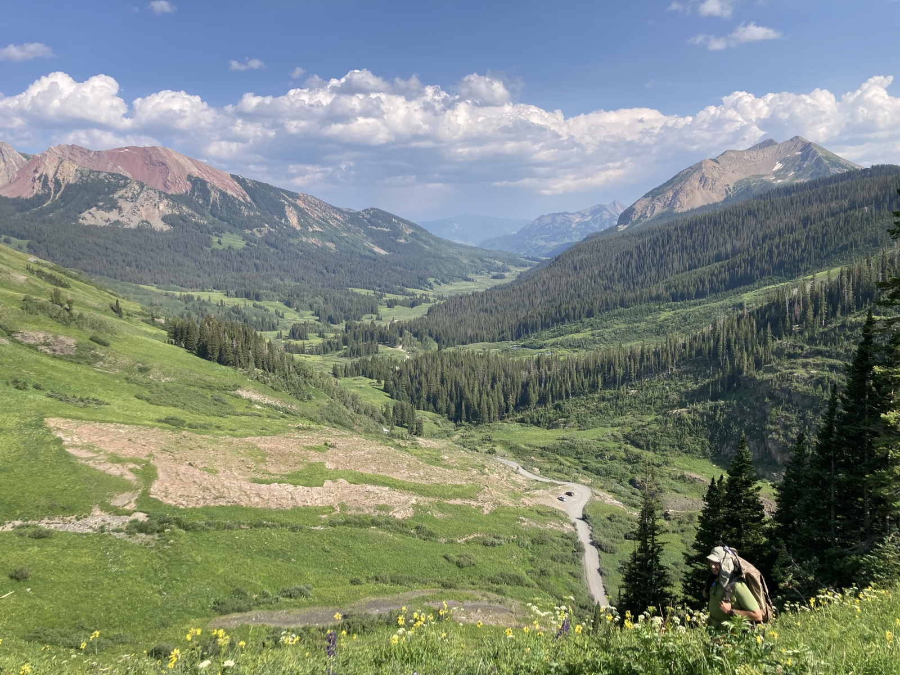
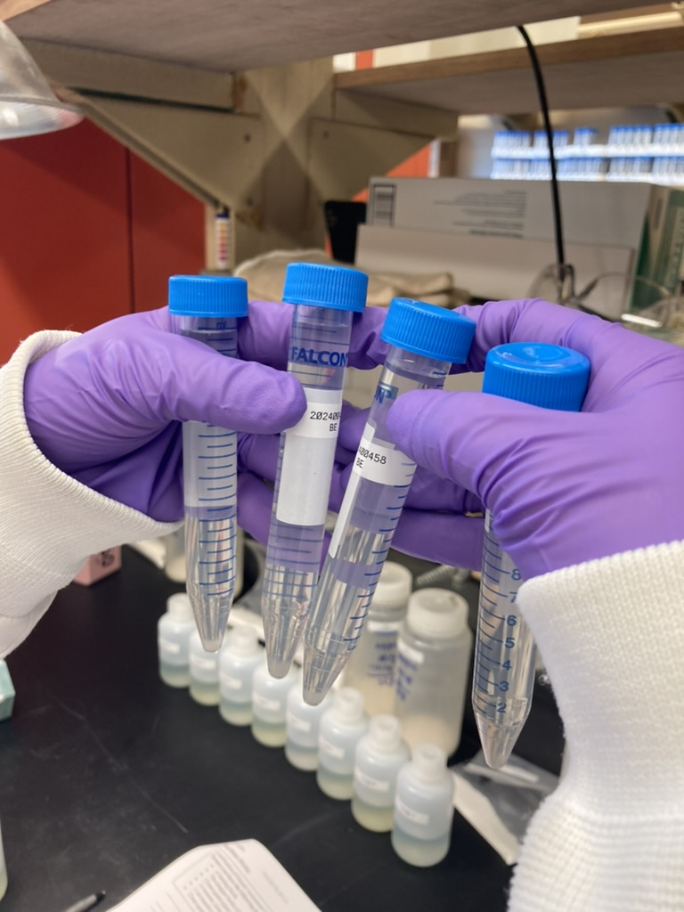

Methods
From observation
to explanation.
I combine field observations, geochemical tracers, digital topography, and numerical models to connect landscape form with the rates and processes that shape it.

Observe & sample
Field geomorphology
I map rivers, terraces, and hillslopes, and collect soil, sediment, and rock samples. These observations connect the shape of a landscape with its geological setting and history.
- River and terrace mapping
- Soil sampling and sediment coring
- Channel geometry and rock-strength measurements


Photos © Eyal Marder · Purdue University
Trace rates & histories
Geochemical tracers & laboratory work
I use tracers in soil and sediment to investigate erosion, atmospheric inputs, and redistribution. My laboratory experience includes both in situ and meteoric beryllium-10.
- In situ ¹⁰Be for long-term denudation
- Meteoric ¹⁰Be inventories and flux calibration
- Fallout ¹³⁷Cs for soil redistribution
GSA Today · 2025
Regional evidence for landscape rejuvenationGeomorphic zones, erosion and incision rates, and river steepness connect local river measurements to regional landscape change. The plots follow the north–south projection shown on the map. The High Plains reconstruction is after Leonard (2002).
Marder et al. (2025) · GSA Today · Published study© 2025 The Authors · GSA reuse terms · CC BY-NC article · Full credit
Measure landscape form
Remote sensing & terrain analysis
Digital elevation models, LiDAR, and satellite observations let me follow rivers and hillslopes across scales. I measure channel profiles and drainage-network geometry to compare landscapes on Earth and Mars.
- River profiles, steepness, and knickpoints
- LiDAR terrain and hillslope analysis
- Drainage-network geometry and contributing area
Science · 2025
Mountain building and the spread of lifeCoupled simulations track species through low- and high-uplift landscapes over 20 million years. Colors distinguish simulated species; ER marks the erosional mountain range and DB the adjacent depositional basins.
Marder et al. (2025) · Published study© 2025 The Authors; exclusive licensee AAAS · AAAS author reuse rights · Full credit
Test processes through time
Numerical & coupled models
I use numerical experiments to test how uplift, climate, and rock properties shape landscapes. Coupling landscape evolution with biological processes reveals how changing terrain affects dispersal and diversification.
- Transient landscape evolution
- Coupled dispersal, adaptation, and speciation
- Weathering and geochemical mass balance